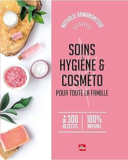
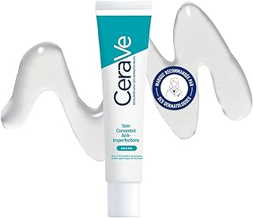
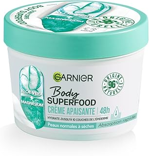
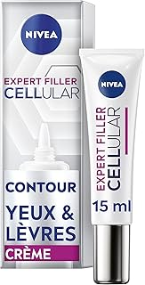
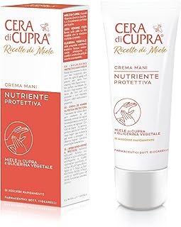
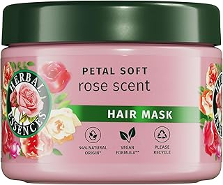
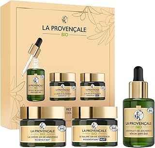
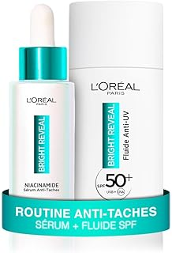

Crème Naturelle Bio – Hydratation Intense et Pureté Absolue pour Votre Peau
Offrez à votre peau le meilleur de la nature avec notre Crème Naturelle Bio. Formulée à base d’ingrédients 100% naturels et biologiques, elle hydrate intensément tout en respectant les peaux les plus sensibles. Une solution écoresponsable, efficace et sans compromis.
📦 Ce que cette crème vous apporte :
💧 Hydratation longue durée : Nourrit la peau en profondeur et la protège toute la journée.
🌱 Formule 100% naturelle : Sans parabènes, sans sulfates, sans silicone.
🍃 Convient à tous types de peau : Idéale pour peaux sèches, sensibles ou réactives.
🌸 Texture légère et non grasse : Pénètre rapidement pour une sensation de fraîcheur.
♻️ Engagement éthique : Produit non testé sur les animaux et emballage recyclable.
➡️ Un soin naturel, doux et efficace pour révéler l’éclat sain de votre peau au quotidien.
Voir l'offre

Vitamines Complètes – Énergie Naturelle, Forme Optimale au Quotidien
Redonnez de la vitalité à votre corps avec notre complexe de Vitamines Complètes 100% naturel. Conçue pour soutenir votre immunité, booster votre énergie et réduire la fatigue, cette formule est idéale pour les journées intenses et les rythmes de vie actifs.
📦 Les bienfaits de ces vitamines naturelles :
⚡ Énergie et vitalité : Un mélange équilibré de vitamines B, C, D et minéraux essentiels.
💪 Soutien du système immunitaire : Aide à renforcer vos défenses naturelles.
🌿 Formule 100% naturelle : Sans colorants, sans conservateurs, sans OGM.
🧠Concentration et clarté mentale : Aide à améliorer les fonctions cognitives.
🧴 Format pratique : Gélules faciles à prendre au quotidien.
➡️ L’allié idéal pour retrouver votre forme physique et mentale, naturellement.
Voir l'offre

Dewocke Crème Varices – Soulagement Naturel pour des Jambes Légères et Saines
Dites adieu à la sensation de jambes lourdes grâce à la crème Dewocke, formulée pour améliorer la circulation sanguine et réduire visiblement l’apparence des varices. Cette pommade de 100g aide à restaurer la beauté naturelle de vos jambes tout en procurant une sensation apaisante immédiate.
✨ Les bienfaits de la crème Dewocke :
🔄 Stimule la circulation et soulage les douleurs veineuses
🌿 Formule naturelle douce pour les peaux sensibles
❄️ Effet rafraîchissant et apaisant dès l’application
💧 Hydrate, tonifie et embellit la peau des jambes
✅ Idéal pour un usage quotidien à la maison
➡️ Un indispensable pour retrouver des jambes légères, belles et en pleine santé, naturellement.
Voir l'offre

Pommade Multi-Usages – Soin Naturel pour Toute la Famille
Prenez soin de votre peau au quotidien avec cette pommade polyvalente, idéale pour toute la famille. Formulée à base d’ingrédients naturels, elle hydrate, protège et répare efficacement la peau, même les plus sensibles.
✨ Ses atouts au quotidien :
🌿 Convient aux adultes, enfants et bébés
💧 Hydratation intense et protection longue durée
👨‍👩‍👧‍👦 Pour le visage, les mains, le corps ou les zones irritées
🛡️ Barrière naturelle contre les agressions extérieures
🚼 Sans parfum, sans parabène, testée dermatologiquement
➡️ Un soin indispensable à avoir dans sa trousse familiale pour une peau saine, douce et protégée.
Voir l'offre

Cattier Lait Hydratant Coco Vanille Bio – Douceur & Nutrition Quotidienne
Offrez à votre peau un moment de pure gourmandise avec le lait corporel bio Cattier à la noix de coco et vanille. Une texture onctueuse, une senteur délicate et des ingrédients naturels pour nourrir, hydrater et adoucir la peau, jour après jour.
✨ Les bienfaits de ce soin bio :
🥥 Hydratation intense grâce à l'huile de coco
🍦 Parfum naturel et apaisant à la vanille
🌿 Formule certifiée BIO et vegan, sans ingrédients controversés
🧴 Flacon de 500 ml : format économique et familial
👶 Convient aux peaux sensibles, même celles des enfants
➡️ Un soin sensoriel et naturel à intégrer dans votre routine bien-être pour une peau douce, nourrie et délicatement parfumée.
Voir l'offre

Crème Apaisante CICA+ Topicrem – Soin Réparateur pour Toute la Famille
Apaisez rapidement les irritations, rougeurs ou petites blessures cutanées grâce à la Crème CICA+ de Topicrem. Enrichie en zinc et acide hyaluronique, elle favorise la régénération de la peau tout en la protégeant.
Idéale pour les peaux sensibles de bébé, enfant et adulte.
✨ Ce que cette crème vous offre :
💧 Réparation rapide : acide hyaluronique pour favoriser la cicatrisation
🔒 Protection renforcée : zinc pour purifier et apaiser
👶 Formule douce : sans parfum, hypoallergénique, adaptée à toute la famille
🌿 Texture fondante : pénètre facilement sans coller
🧴 Format pratique : tube 40 ml à emporter partout
➡️ Un indispensable pour soulager et protéger les peaux fragilisées au quotidien.
Voir l'offre

Crème Nettoyante Apaisante – The INKEY List Oat Cleansing Balm
Nettoyez votre peau en douceur tout en éliminant efficacement le maquillage, même waterproof, grâce au Oat Cleansing Balm de The INKEY List. Idéal pour les peaux sensibles, ce baume à base d’avoine apaise, hydrate et respecte l’équilibre naturel de la peau.
Un rituel quotidien pour une peau propre, souple et apaisée.
✨ Les bienfaits de ce nettoyant visage :
🌾 Apaisant naturel : extrait d’avoine pour calmer les irritations
💄 Démaquillage efficace : élimine les impuretés et le maquillage tenace
💧 Hydratation douce : laisse la peau souple et nourrie
🧴 Texture baume fondante : se transforme en huile au contact de la peau
🧘‍♀️ Sans parfum : convient parfaitement aux peaux réactives
➡️ Le choix parfait pour une routine de soin minimaliste, naturelle et ultra douce.
Voir l'offre

Crème Apaisante & Mini Masque Argile Rose Bio 30ml – Cattier
Découvrez le Mini Masque Argile Rose Bio de Cattier, idéal pour apaiser, purifier et illuminer les peaux sensibles et délicates. Sa formule naturelle à base d’argile rose bio aide à revitaliser votre teint tout en respectant l’équilibre de la peau.
Un soin parfait pour une peau douce, nette et éclatante, à tout moment de la journée.
✨ Points forts du masque :
🌿 100% naturel et certifié bio
🌸 Apaise et adoucit les peaux sensibles
🌞 Purifie en douceur et illumine le teint
🧴 Format mini pratique, parfait pour les déplacements
🌍 Respectueux de la peau et de l’environnement
➡️ Offrez à votre peau un moment de douceur et de fraîcheur avec ce masque bio compact et efficace.
Voir l'offre

Garnier Skin Active – Coffret Sérum Jour Anti-Taches & Sérum Nuit Booster d’Éclat
Découvrez le coffret Garnier Skin Active, alliant un sérum jour anti-taches brunes et un sérum nuit booster d’éclat, spécialement formulés pour un teint lumineux et homogène. Enrichis en vitamine C, ces soins visage vegan et cruelty-free conviennent à tous types de peaux.
Un duo efficace pour révéler une peau éclatante, hydratée et visiblement plus uniforme, jour après jour.
✨ Atouts du coffret :
🍊 Concentration optimale en vitamine C pour éclaircir le teint
☀️ Sérum jour ciblant les taches brunes
🌙 Sérum nuit revitalisant et boosteur d’éclat
🌱 Formule vegan et cruelty free respectueuse de la peau et des animaux
💧 Convient à tous types de peau, même sensibles
🧴 Format pratique : 2 x 30 ml
➡️ Offrez à votre peau le meilleur des soins pour un éclat naturel et durable au quotidien.
Voir l'offre

CeraVe – Soin Concentré Anti-Imperfections
Découvrez le soin concentré CeraVe spécialement formulé pour réduire efficacement les imperfections et resserrer les pores dilatés. Enrichi en AHA, BHA, acide hyaluronique et 3 céramides essentiels, ce traitement hydrate la peau tout en la purifiant.
Idéal pour les peaux à tendance acnéique, ce soin aide à retrouver un teint net, équilibré et une texture de peau plus lisse.
✨ Avantages clés :
🔬 Action ciblée contre boutons et imperfections
🧴 Resserre visiblement les pores dilatés
💧 Hydratation longue durée grâce à l’acide hyaluronique
🌿 Formule enrichie en 3 céramides pour renforcer la barrière cutanée
⚖️ Convient aux peaux à tendance acnéique, même sensibles
➡️ Offrez à votre peau un soin complet pour un visage purifié et éclatant de santé.
Voir l'offre

Braun Épilateur à Lumière Pulsée Silk·expert Pro 5 PL5262
Découvrez l’épilateur Braun Silk·expert Pro 5 PL5262, une solution innovante pour une épilation semi-définitive à domicile, efficace dès 2 séances seulement. Cette alternative sûre et performante au laser vous permet de profiter d’une peau douce et nette durablement.
Conçu pour une utilisation polyvalente, il est livré avec 3 têtes adaptées pour épiler jambes, visage, maillot et plus encore, offrant un soin complet et précis.
🌟 Points forts du produit :
💡 Technologie à lumière pulsée pour une épilation semi-définitive
⚡ Résultats visibles dès 2 séances
🪒 Alternative pratique et sûre au laser
🔄 3 têtes multi-usages pour zones variées (jambes, visage, maillot)
👌 Compatible avec rasoir Venus pour un confort optimal
➡️ Offrez-vous une peau lisse durablement avec Braun, la référence de l’épilation à lumière pulsée.
Voir l'offre

Garnier Body Superfood – Crème Soin Corps Apaisante
Offrez à votre peau une hydratation intense et apaisante avec la crème soin corps Garnier Body Superfood. Formulée à 96% d’ingrédients d’origine naturelle, cette crème vegan associe les bienfaits nourrissants de l’Aloe Vera et du Magnésium pour une sensation de fraîcheur et de confort longue durée, jusqu’à 48 heures.
Idéale pour les peaux normales à sèches, elle nourrit, apaise et protège votre épiderme au quotidien, tout en respectant votre peau et la planète.
🌿 Les atouts de cette crème :
💧 Hydratation durable 48h pour une peau souple et douce
🌱 Formule vegan et naturelle à 96%
🌵 Enrichie en Aloe Vera apaisant et Magnésium revitalisant
🛡️ Convient parfaitement aux peaux normales à sèches
♻️ Flacon recyclable de 380 ml, respectueux de l’environnement
➡️ Choisissez Garnier Body Superfood pour une peau apaisée, hydratée et éclatante de santé au quotidien.
Voir l'offre

NIVEA Cellular Expert Lift – Soin Contour des Yeux & Lèvres
Prenez soin de votre regard avec le soin contour des yeux et lèvres NIVEA Cellular Expert Lift. Ce soin anti-âge ciblé repulpe, raffermit et hydrate intensément la peau fragile autour des yeux et des lèvres, tout en réduisant visiblement les rides.
Formulé avec de l’acide hyaluronique et de l’acide folique, il convient à tous les types de peaux pour un effet lissant et revitalisant durable.
🌟 Points forts du produit :
💧 Hydratation profonde pour une peau douce et souple
✨ Réduction visible des rides et des ridules
🔄 Effet raffermissant pour un contour plus tonique
🧴 Convient à tous types de peaux, même les plus sensibles
📏 Format pratique de 15 ml, facile à emporter partout
➡️ Offrez à votre regard un soin expert pour un effet liftant et rajeunissant avec NIVEA Cellular Expert Lift.
Voir l'offre

Sève Miracle – Crème Jour & Nuit
Découvrez Sève Miracle, une crème multifonction conçue pour revitaliser et hydrater votre peau jour et nuit. Sa formule unique nourrit intensément, améliore l’élasticité et aide à révéler un teint éclatant de santé.
🌿 Avantages clés :
Hydratation longue durée pour une peau souple et confortable
Utilisation double action, adaptée pour le jour et la nuit
Améliore la texture et la luminosité de la peau
Convient à tous types de peaux, même sensibles
➡️ Adoptez Sève Miracle pour une routine beauté complète qui sublime votre peau à tout moment de la journée.
Voir l'offre

Huile Végétale Rose Musquée Bio – Pranarôm
Découvrez l’huile végétale de Rose Musquée Bio Pranarôm, un soin naturel et puissant pour la beauté de votre peau. Riche en oméga 3, 6 et 9, elle hydrate intensément, nourrit en profondeur et aide à prévenir les signes de l’âge pour un teint éclatant et revitalisé.
🌿 Bienfaits essentiels :
Anti-âge naturel pour une peau plus ferme et éclatante
Riche en acides gras essentiels Oméga 3, 6 et 9 pour nourrir et régénérer
Améliore l’élasticité et la souplesse de la peau
100 % bio et adaptée à tous types de peaux, même sensibles
➡️ Offrez à votre peau le meilleur de la nature avec cette huile végétale aux vertus exceptionnelles pour un soin quotidien complet.
Voir l'offre

Crème pour les Mains Recette de Beauté – Cera di Cupra
Offrez à vos mains une douceur et une hydratation intenses avec la crème pour main Recette de Beauté de Cera di Cupra. Sa formule riche nourrit, protège et répare la peau pour des mains douces, souples et agréablement parfumées toute la journée.
🌸 Avantages clés :
Hydratation profonde pour une peau douce et revitalisée
Protège contre les agressions extérieures et le dessèchement
Texture légère qui pénètre rapidement sans laisser de film gras
Format pratique de 75 ml, idéal pour une utilisation quotidienne à la maison ou en déplacement
➡️ La crème parfaite pour chouchouter vos mains et leur redonner éclat et confort au quotidien.
Voir l'offre

Herbal Essences Douceur Masque Parfum Rose – Soin Capillaire Hydratant et Soyeux
Découvrez le masque capillaire Herbal Essences Douceur Parfum Rose, spécialement formulé pour hydrater intensément vos cheveux tout en leur apportant douceur et brillance. Enrichi d’ingrédients d’origine naturelle* et d’une délicate essence de rose, ce soin vegan respecte votre fibre capillaire et l’environnement.
🌹 Points forts :
Hydratation profonde pour des cheveux soyeux et faciles à coiffer
Formule vegan, sans cruauté animale
Parfum délicat et naturel à la rose pour une expérience sensorielle unique
Format généreux de 500 ml, idéal pour un usage régulier à la maison
➡️ Offrez à vos cheveux un soin doux et naturel pour révéler leur éclat et leur vitalité jour après jour.
Voir l'offre

Crème de Rasage & Soin Complet Homme – Fraîcheur Sport et Entretien Barbe
Découvrez notre crème de rasage de haute qualité, accompagnée d’un blaireau et d’un baume après-rasage, spécialement conçus pour prendre soin de votre visage et de votre barbe. Formulée pour une expérience de rasage douce et efficace, elle laisse votre peau fraîche et parfaitement hydratée.
🏆 Avantages :
Crème de rasage onctueuse pour un rasage précis et confortable
Blaireau de qualité pour une application optimale
Baume apaisant après-rasage pour calmer et hydrater la peau
Parfum sport frais et tonique pour une sensation de vitalité durable
Idéal pour l’entretien de la barbe et la routine soin du visage
➡️ Offrez-vous un rituel de rasage professionnel pour une peau nette et une barbe impeccable, avec une touche de fraîcheur sport.
Voir l'offre

Coffret Cadeau Femme Noël Or de Jouvence – Soins Spécifiques Pour Peaux Matures
Offrez à votre peau un véritable soin d’exception avec ce coffret exclusif de La Provençale, spécialement conçu pour les peaux matures. Ce trio de produits allie efficacité et douceur pour lutter contre les signes de l’âge et redensifier la peau.
🌿 Ce coffret comprend :
Sérum Anti-Âge concentré pour lisser et raffermir
Crème Redensifiante pour nourrir et revitaliser la peau
Baume Nuit réparateur pour une peau régénérée au réveil
🎁 Edition Limitée parfaite pour un cadeau de Noël alliant beauté et bien-être.
➡️ Une routine complète pour révéler l’éclat naturel et la jeunesse de votre peau mature.
Voir l'offre

Christine Arbel Paris Mademoiselle Arbel – Coffret Eau de Toilette & Brume Parfumée Corps et Cheveux
Découvrez l’élégance à la française avec ce coffret parfumé de Christine Arbel Paris. Composé d’une eau de toilette 100 ml et d’une brume délicate pour corps et cheveux, il enveloppe votre peau d’un parfum raffiné et subtil.
🌸 Caractéristiques principales :
Eau de toilette aux notes féminines et envoûtantes
Brume légère pour une fraîcheur durable sur la peau et les cheveux
Fabrication française garantissant qualité et authenticité
🎀 Un cadeau parfait pour sublimer votre quotidien avec une touche de sophistication parisienne.
➡️ Profitez d’une fragrance élégante et durable, idéale pour toutes les occasions.
Voir l'offre

EVOLUDERM – Routine Hydratante Corps & Cheveux – 9 Produits Monoï à la Folie
Offrez à votre peau et vos cheveux une hydratation profonde avec la routine complète EVOLUDERM composée de 9 produits essentiels. Enrichie au Monoï à la Folie, cette gamme allie douceur et soin intensif pour un bien-être quotidien.
🌿 Points forts :
Formule riche en ingrédients d’origine naturelle pour une hydratation optimale
Routine végan respectueuse de votre peau et de l’environnement
Fabrication française gage de qualité et d’authenticité
Senteur exotique Monoï qui laisse un parfum délicat et envoûtant
💧 Une routine complète pour nourrir, protéger et sublimer votre corps et vos cheveux au quotidien.
➡️ Idéal pour celles et ceux qui recherchent des soins naturels et performants, avec un parfum estival irrésistible.
Voir l'offre

Furniture Clinic Huile Danoise Supérieure – Protection & Entretien Bois Naturel
Offrez à vos meubles et surfaces en bois une protection durable avec cette huile danoise haut de gamme. Adaptée à tous types de bois nus, elle sublime la beauté naturelle du bois tout en assurant une finition satinée élégante.
🌿 Caractéristiques clés :
Protège et imperméabilise efficacement bois intérieurs et extérieurs
Finition satinée pour un rendu naturel et soigné
Formule agréée alimentaire, sûre pour les surfaces en contact avec les aliments
Restaure la beauté originale du bois en nourrissant profondément
💧 Un soin complet pour préserver, embellir et prolonger la vie de vos bois précieux.
➡️ Idéal pour les amateurs de mobilier bois qui recherchent qualité et durabilité.
Voir l'offre

Académie Déodorant Roll-On Anti-Transpirant Post-Épilation – Protection Douce et Efficace
Découvrez ce déodorant roll-on spécialement formulé pour les peaux sensibles après épilation. Il offre une protection anti-transpirante longue durée tout en apaisant la peau irritée.
🌿 Points forts :
Réduit la transpiration sans agresser la peau
Effet apaisant post-épilation pour un confort optimal
Formule douce adaptée aux peaux sensibles
Facile à appliquer grâce au format roll-on pratique
➡️ Parfait pour rester frais et serein toute la journée, même après épilation.
Voir l'offre

GARNIER Skin Active – Sérum Crème Booster d'Éclat 2-en-1 pour une Peau Hydratée et Radieuse
Découvrez ce sérum crème innovant de Garnier, formulé pour revitaliser les peaux ternes et en manque d’éclat. Grâce à sa double action hydratante 72h et protection solaire FPS 25, il illumine votre teint tout en nourrissant votre peau en profondeur.
🍊 Atouts clés :
Formule enrichie en Vitamine C et extraits d’agrumes pour un effet booster d’éclat naturel
Hydratation longue durée jusqu’à 72 heures
Protection contre les rayons UV avec un SPF 25 intégré
Convient à tous types de peaux, même sensibles
Produit vegan et cruelty free, respectueux de votre peau et de la planète
➡️ Offrez à votre peau un éclat frais et lumineux au quotidien avec ce soin multifonction efficace et léger.
Voir l'offre

GARNIER Skin Active – Masque Visage Tissu Super Hydratant & Booster d’Éclat
Offrez à votre peau un soin intensif avec ce masque visage en tissu signé Garnier, spécialement conçu pour hydrater en profondeur et raviver l’éclat des peaux ternes. Enrichi en Vitamine C et Acide Hyaluronique, il agit comme un véritable booster de luminosité tout en apportant une hydratation optimale.
💧 Points forts :
Hydratation intense pour une peau douce et repulpée
Vitamine C pour un effet éclaircissant naturel et un teint lumineux
Acide Hyaluronique pour retenir l’humidité et lisser la peau
Formule vegan et cruelty free, respectueuse de la peau et de l’environnement
Idéal pour les peaux fatiguées et manquant d’éclat
➡️ Un rituel express pour une peau revitalisée, fraîche et éclatante, à chaque utilisation.
Voir l'offre

LE PETIT OLIVIER – Crème Douche Extra Douce & Hydratante au Lait de Coton
Découvrez la douceur et l’hydratation optimale avec cette crème douche extra douce signée Le Petit Olivier. Sa formule au lait de coton, respectueuse de la peau, nettoie en douceur tout en apportant un soin hydratant idéal pour toute la famille.
🛁 Points forts :
Texture onctueuse et hydratante pour une peau douce et protégée
pH neutre, sans savon ni colorant, adaptée aux peaux sensibles
Convient à toute la famille, même les peaux délicates
Fabriqué en France avec des ingrédients sélectionnés pour leur qualité
Format généreux de 750 ml pour un usage quotidien prolongé
➡️ Offrez à votre peau un moment de confort et de fraîcheur, pour une douche qui respecte et nourrit votre épiderme naturellement.
Voir l'offre

NIVEA Luminous 630 – Sérum Skin Glow Apaisant et Anti-Taches
Découvrez le sérum NIVEA Luminous 630, spécialement formulé pour illuminer votre peau tout en réduisant efficacement les taches pigmentaires. Sa formule apaisante hydrate intensément, affine les pores et unifie le teint pour une peau radieuse et éclatante.
🌿 Points clés :
Actif Thiamidol breveté pour atténuer les taches visibles
Enrichi en Niacinamide et Aloe Vera pour apaiser et hydrater la peau
Texture légère et non grasse, rapidement absorbée
Convient à tous les types de peaux, même sensibles
Formule vegan respectueuse de votre peau
Format pratique de 15 ml, idéal pour une routine visage ciblée
➡️ Offrez à votre peau un soin anti-taches performant tout en douceur, pour un éclat naturel et une texture de peau affinée au quotidien.
Voir l'offre

NIVEA Cellular Expert Filler – Sérum Éclat à la Vitamine C
Boostez l’éclat naturel de votre peau avec ce sérum visage concentré NIVEA, enrichi en Vitamine C, Vitamine E et Acides Aminés. Sa formule puissante favorise un teint lumineux, revitalisé et uniforme tout en renforçant la barrière cutanée.
🌟 Caractéristiques principales :
Vitamine C et E pour protéger et illuminer la peau
Acides Aminés pour stimuler la régénération cellulaire
Texture légère, pénétration rapide
Convient à tous types de peau, même sensibles
Flacon de 30 ml pour une utilisation durable
➡️ Offrez à votre peau un soin expert pour un teint radieux et un éclat durable au quotidien.
Voir l'offre

L’Oréal Paris – Routine Anti-Taches Bright Reveal
Offrez à votre peau une protection et un soin complet avec cette routine anti-taches signée L’Oréal Paris. Composée d’un sérum et d’un fluide anti-UV SPF50+, elle est enrichie en Niacinamide pour réduire visiblement les taches et unifier le teint.
🌞 Points forts :
Protection solaire haute performance SPF50+ contre les rayons UV
Niacinamide pour éclaircir et uniformiser la peau
Texture légère et non grasse, adaptée à tous types de peau
Favorise un teint lumineux et éclatant jour après jour
➡️ Idéale pour une peau protégée, hydratée et sans taches, pour un éclat naturel au quotidien.
Voir l'offre

Garnier Pure Active – Masque Réducteur de Points Noirs 3 en 1
Découvrez le soin complet Garnier Pure Active, un nettoyant, exfoliant et masque tout-en-un spécialement formulé pour réduire efficacement les points noirs et prévenir leur apparition. Enrichi en BHA et charbon actif, il purifie la peau en profondeur tout en respectant les peaux mixtes à grasses.
🌿 Avantages clés :
Action 3 en 1 : nettoie, exfolie et masque pour une peau nette
BHA pour désincruster les pores et éliminer les impuretés
Charbon actif pour absorber l’excès de sébum et purifier
Formule vegan, cruelty free, idéale pour peaux mixtes à grasses
➡️ Un allié incontournable pour un teint frais, clair et sans imperfections au quotidien.
Voir l'offre
CeraVe – Soin Concentré Anti-Imperfection
Offrez à votre peau un soin expert avec le CeraVe Soin Concentré Anti-Imperfection, spécialement formulé pour réduire efficacement les imperfections tout en resserrant les pores dilatés. Enrichi en AHA, BHA, acide hyaluronique et 3 céramides essentiels, ce soin hydrate, purifie et restaure la barrière cutanée des peaux à tendance acnéique.
🌿 Points forts :
Réduction visible des imperfections et boutons
Resserrement des pores pour une peau plus lisse
Action exfoliante douce grâce aux AHA et BHA
Hydratation optimale avec l’acide hyaluronique
Renforcement de la barrière cutanée par les céramides
Formule adaptée aux peaux sensibles et à tendance acnéique
➡️ Le soin idéal pour une peau nette, apaisée et équilibrée jour après jour.
Voir l'offre

Herbal Essences Apaise Shampoing Hydratant
Découvrez le pouvoir naturel du shampoing Herbal Essences Apaise Hydratant, enrichi en Aloe Vera pour hydrater en profondeur, nettoyer délicatement et nourrir les cheveux très secs. Sa formule sans sulfates, sans silicones et végan assure un soin respectueux du cuir chevelu et de la fibre capillaire, tout en laissant un parfum frais et floral de jasmin.
🌿 Points forts :
Hydratation intense pour cheveux très secs
Nettoyage doux sans agresser le cuir chevelu
Formule naturelle sans sulfates ni silicones
Parfum délicat de jasmin pour une sensation de fraîcheur
Produit végan, respectueux de l’environnement
➡️ Offrez à vos cheveux une douceur et une vitalité naturelle avec ce duo de 2 bouteilles de 250 ml.
Voir l'offre